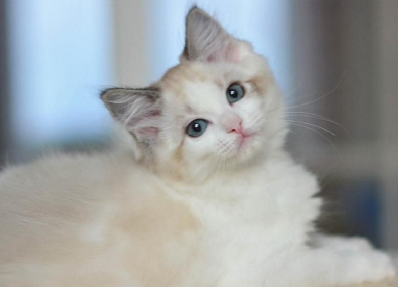

重点色
· 色块分布：整个面部（包括下巴和耳朵），四肢，被毛，尾部
·详细特征：面部与尾巴颜色较深，躯干部颜色由脚掌向上扩散逐渐变浅。被毛大量着色，胸部与肚皮为白色，眼睛大多为深蓝色（有部分浅蓝）。
重点色布偶有着经典的暹逻猫的图案，色点与脚掌都带有重点色，眼睛因毛色的分布而显得十分明亮突出，犹如海水般湛蓝。
重点色布偶由于其颜色较深的面部与四肢，常被戏称为"挖煤工"。
*注：为便于读者区分，下文中的"面部"指从耳朵到下巴的部分，"色点"单指鼻子周围面盘（不包括耳朵和下巴）的色块。面部=耳朵+面盘+下巴。
手套色
·色块分布：除下巴外的面部、双耳、除前脚趾外的前肢、被毛、尾巴
·详细特征：重点色的面盘、耳朵与尾巴，白色的下巴、胸腹、前脚趾（仅脚趾）与大部分后腿，被毛、尾部均有着色
手套布偶猫好像刚刚跳进奶油碗里偷吃了一点，他们有着毛茸茸的白色的下巴、白手套（前肢）和白靴子（后腿）一样。
和重点色布偶猫一样，手套色布偶猫面盘、耳朵、被毛与尾巴均有着色，胸部及腹部为白色。相反，手套色的下颚、前爪与后腿是白色的，相对来讲被毛的色重度也比重点色浅一些。

*注：没有手套双色或双色手套的说法，此类布偶均为腿部出现色块的双色或流星斑点过大的手套，请勿相信！
双色
·色块分布：双眼向上散布的八字形面具，耳朵，被毛，尾巴
·详细特征：拥有基本对称、自双眼向上散布的八字形面具
双色布偶的四肢、胸部、腹部和脸上倒V字的部分都是白色的，背部也可能会有一两片白色的斑纹。只有它们的尾巴、耳朵和V字斑纹以上的部分才会显示出较深的颜色。
双色布偶像是跳进奶油池的猫，低下头偷吃时彻彻底底地留下了可爱的证据。眼下布偶猫盛行，双色又正当顶峰，是其中数目最多、目前最受欢迎的品种。
*注：双色布偶官方名称为Point-White，Bicolor只是平常称法，不作正式用途（如证书血统标示等）。
梵色
·色块分布：耳朵，脸部上端、尾巴、背部某些部分（也可能没有）。
·详细特征：耳朵色块尤为显著，蓝色眼睛（深蓝色偏少一些），耳朵以下双眼以上的部分有渐变的色块。背部色块非常少，且颜色浅于耳朵，多居于背部顶端（这点区别于高白及中高白）。
梵色布偶猫看起来则好像快沉到奶油池底了。只有脸部上端、耳朵和尾巴，背上的极少部位可能较深的颜色。梵色相比其他布偶来讲毛发较短，眼睛呈杏仁形。严格意义上讲，梵色是双色的一种，只是面具比双色高、背部色块少而已。CFA布偶猫的血统色中，用Point-White Van来称呼梵色布偶，而我们平时简称为Van。
*注：梵色布偶猫非常少，且血统不稳定，容易串种导致血统不纯，所以很容易被猫贩子利用，请各位在购买时多加注意。